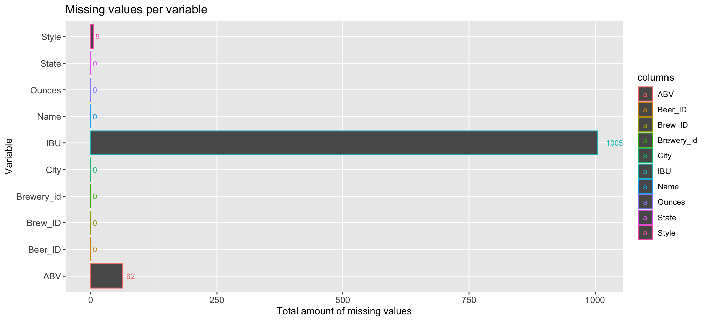

Budweiser Data Analysis
Laura Ahumada
10/5/2021
- Here are the answer to your questions and some extra analysis that might be useful
A link to shiny app interactive visualization of this project
#Reading Files
#Open breweries file
breweries=read.csv("/Users/lauraahumada/Documents/SMU_main/DoingDataScience/MSDS_6306_Doing-Data-Science/Unit 8/Breweries.csv")
#Open Beers file
beers=read.csv("/Users/lauraahumada/Documents/SMU_main/DoingDataScience/MSDS_6306_Doing-Data-Science/Unit 8/Beers.csv")all=breweries %>% group_by(State) %>% summarize(Count=n()) #Breweries per State
all$State= factor(all$State, level =all$State[order(all$Count)]) #Organize by State#Graph
ggplot(all, aes(x = as.factor(State), y = Count, color=State)) +
geom_bar(stat = "identity", position = "dodge", width=.5) +
geom_text(size=2.5,position = position_dodge(width= .5), aes(label=Count),vjust= .5, hjust = -0.5)+
ggtitle("Breweries per State") +
ylab("Number of Breweries") +
xlab("State") +
coord_flip() +
theme(plot.title = element_text(hjust = 0.5),legend.position = "none") +
theme(axis.text = element_text(size = 6)) # changes axis labels
- There is a range of 1-47 Breweries per State
- The state with most Breweries is Colorado
- The state with the least Breweries is DC
- Odd to see Texas, the second largest state in USA, as the 5th State with most Breweries. One would imagine they would be number 1 or 2nd with most breweries.
Calculating the missing values
#Total missing values from both data frames
all_missing=(data_frame(Count=(c(sapply(beers, function(x) all_miss=sum(is.na(x))),sapply(breweries, function(x) sum(is.na(x))))), columns=c((names(beers)),(names(breweries)))))
#Verify if there are no missing char values
#Find Empty string in the char columns
#summary(breweries) #Name, city and State are characters columns except the ID
name=breweries %>% filter((Name=="")|(Name=="NA")|(Name==" ")) #None
city=breweries %>% filter((City=="")|(City=="NA")|(City==" ")) #None
stt=breweries %>% filter((State=="")|(State=="NA")|(State==" ")) #None
#summary(beers) #Style and Name columns are characters rest are numbers
#Find Empty string in the char columns
styl=beers %>% filter((Name=="")|(Name=="NA")|(Name==" ")) #None
missing_style=beers %>% filter((Style=="")|(Style=="NA")|(Style==" ")) #5 NA
all_missing[6,"Count"]=5 #Update missing value for Style in Data frame #Visualizing missing values
all_missing %>% ggplot(aes(x=Count, y=columns, color=columns)) + geom_col(position = "dodge") +
xlab("Total amount of missing values") + ggtitle("Missing values per variable") +
geom_text(size=3,position = position_dodge(width= .5), aes(label=Count),vjust= .5, hjust = -0.5) +
theme(axis.text = element_text(size = 10)) + ylab("Variable")
The missing values:
International Bitterness Units of the beer has 1005 missing values
- That is half the data. If allowed based on further analysis on data, values should be imputed
- That is half the data. If allowed based on further analysis on data, values should be imputed
Alcohol by volume of the beer has 62 missing values
Bitternes unit has very few data missing, it can be ommited.
Style has 5 missing values
Name of beer, Beer Id, Brewery ID, Ounces, Brew_ID, Name of Brewery and City have no values missing
Checking correlation to see if IBU NA data can be imputed
#ABV can help fill 943 IBU missing values since pairplot shows that there is a 67% correlation
#Visualizing IBU and ABV pattern to confirm
#ABV vs IBU in segments in box plot to see distribution
beers %>%
ggplot(aes(x= ABV, y=IBU, color=as.factor(cut_width(beers$ABV,.009)))) +
geom_boxplot(mapping = aes(group = cut_width(ABV,.009))) +
ggtitle("Alcohol volumne vs Bitterness unit") + xlab("Alcohol by volume") +
ylab("Bitterness unit") +
scale_colour_discrete(name="Alcohol Segment") The mean keeps increasing, suggesting a pattern
IBU mean per segment using ABU was used to fill NA’s and dropped the ABU missing values
Merging brewery and beer data
all_data=merge(breweries, new, by.x = "Brew_ID", by.y = "Brewery_id")
#Verifying that there are no NA's
sapply(all_data, function(x) sum(is.na(x))) #No NA's## Brew_ID Name.x City State Name.y Beer_ID
## 0 0 0 0 0 0
## ABV IBU Style Ounces ABV_ind
## 0 0 0 0 0- First 6 observations of all the data
kable(head(all_data,6),"simple")| Brew_ID | Name.x | City | State | Name.y | Beer_ID | ABV | IBU | Style | Ounces | ABV_ind |
|---|---|---|---|---|---|---|---|---|---|---|
| 1 | NorthGate Brewing | Minneapolis | MN | Stronghold | 2688 | 0.060 | 25 | American Porter | 16 | 5 |
| 1 | NorthGate Brewing | Minneapolis | MN | Parapet ESB | 2687 | 0.056 | 47 | Extra Special / Strong Bitter (ESB) | 16 | 4 |
| 1 | NorthGate Brewing | Minneapolis | MN | Pumpion | 2689 | 0.060 | 38 | Pumpkin Ale | 16 | 5 |
| 1 | NorthGate Brewing | Minneapolis | MN | Get Together | 2692 | 0.045 | 50 | American IPA | 16 | 2 |
| 1 | NorthGate Brewing | Minneapolis | MN | Maggie’s Leap | 2691 | 0.049 | 26 | Milk / Sweet Stout | 16 | 2 |
| 1 | NorthGate Brewing | Minneapolis | MN | Wall’s End | 2690 | 0.048 | 19 | English Brown Ale | 16 | 2 |
- Last 6 observations of all the data
kable(tail(all_data,6),"simple")| Brew_ID | Name.x | City | State | Name.y | Beer_ID | ABV | IBU | Style | Ounces | ABV_ind | |
|---|---|---|---|---|---|---|---|---|---|---|---|
| 2342 | 556 | Ukiah Brewing Company | Ukiah | CA | Pilsner Ukiah | 98 | 0.055 | 31.50 | German Pilsener | 12 | 4 |
| 2343 | 557 | Butternuts Beer and Ale | Garrattsville | NY | Snapperhead IPA | 51 | 0.068 | 79.75 | American IPA | 12 | 7 |
| 2344 | 557 | Butternuts Beer and Ale | Garrattsville | NY | Moo Thunder Stout | 50 | 0.049 | 16.75 | Milk / Sweet Stout | 12 | 2 |
| 2345 | 557 | Butternuts Beer and Ale | Garrattsville | NY | Porkslap Pale Ale | 49 | 0.043 | 16.75 | American Pale Ale (APA) | 12 | 2 |
| 2346 | 557 | Butternuts Beer and Ale | Garrattsville | NY | Heinnieweisse Weissebier | 52 | 0.049 | 16.75 | Hefeweizen | 12 | 2 |
| 2347 | 558 | Sleeping Lady Brewing Company | Anchorage | AK | Urban Wilderness Pale Ale | 30 | 0.049 | 16.75 | English Pale Ale | 12 | 2 |
Calculating bitterness and alcohol mean per State
#IBU mean per State
ibu_state=all_data %>% group_by(State) %>% summarize(IBU_mean=mean(IBU))
abv_state=all_data %>% group_by(State) %>% summarize(ABV_mean=mean(ABV))
#Combine both ABV and IBU count per state
IBU_ABV=merge(abv_state,ibu_state, by="State", all.y=TRUE)
#intersect((head((IBU_ABV %>% arrange(desc(ABV_mean)) %>% select(State)),10)),(head((IBU_ABV %>% arrange(desc(IBU_mean)) %>% select(State)),10))) #Common states in the top 10 for both IBU and ABV#Bitterness average per State
IBU_ABV$State= factor(IBU_ABV$State, level =IBU_ABV$State[order(IBU_ABV$IBU_mean)])
plot1=IBU_ABV %>% ggplot(aes(y=State, x=IBU_mean, color=State)) + geom_col(width=.5) +
ggtitle("Bitternes average per State") + xlab("Bitternes average") +
ylab("State")+
theme(axis.text = element_text(size = 9))
#ABV average per State
IBU_ABV$State= factor(IBU_ABV$State, level =IBU_ABV$State[order(IBU_ABV$ABV_mean)])
plot2=IBU_ABV %>% ggplot(aes(y=State, x=ABV_mean, color=State)) + geom_col(width=.5) +
ggtitle("Alcohol average per State") + xlab("Alcohol by volume average") +
ylab("State") +
theme(axis.text = element_text(size = 9)) grid.arrange(plot1, plot2, ncol=2)- The highest mean bitterness unit average state is Nevada while the lowest is Wisconsin
- State with the highest alcohol average per state is Nevada and lowest is UTAH
Top 3 states with highest Bitterness
kable(head(ibu_state %>% arrange(desc(IBU_mean)),3),"simple")| State | IBU_mean |
|---|---|
| NV | 61.57500 |
| DC | 60.71875 |
| WV | 57.50000 |
States with Lowest Bitternes unit
kable(head(ibu_state %>% arrange(IBU_mean),3) ,"simple")| State | IBU_mean |
|---|---|
| WI | 29.97059 |
| AR | 32.95000 |
| WY | 33.21667 |
Top states with highest Alcohol volume
#ABV mean per State
kable(head(abv_state %>% arrange(desc(ABV_mean)),3) ,"simple")| State | ABV_mean |
|---|---|
| NV | 0.066900 |
| DC | 0.065625 |
| KY | 0.064600 |
States with Lowest Alcohol unit
kable(head(abv_state %>% arrange((ABV_mean)),3) ,"simple")| State | ABV_mean |
|---|---|
| UT | 0.0518846 |
| AR | 0.0520000 |
| NH | 0.0523750 |
Alcohol by volume distribution
grid.arrange(plot3, plot4, ncol=2)- The distribution of Alcohol by volume average is right skewed
- There are outlier on both edges.
- There is only 1 outlier beneath the lower fence: 0.001 in California. That is a beer with very low Alcohol volume, should verify if the value is correct. The brewery was confirmed but no information on the beer.
- The outer fence is 0.067 but the max is 0.12. Above the upper fence there are 585 outliers.
- The 4 top states with most outliers are within the the top states with highest mean Alcohol volume :
- 82 from Colorado which is the 6th State with highest alcohol mean,
- 64 from California which is the 11th state with highest mean Alcohol Volume
- 46 from Michigan which is the 5th state with highest mean Alcohol Volume
- 43 from Indiana which is the 4th highest mean Alcohol Volume
- 82 from Colorado which is the 6th State with highest alcohol mean,
- Alcohol vs Bitterness scatterplot
all_data %>%
ggplot(aes(x= ABV, y=IBU)) +
geom_point(color="#FF33CC") +
ggtitle("Alcohol vs Bitterness") + xlab("Alcohol by volume") +
ylab("International bitterness unit") + theme(plot.title = element_text(hjust = 0.5)) - Alcohol vs Bitterness box plot divided in segments for better visualization
all_data %>%
ggplot(aes(x= ABV, y=IBU, color=as.factor(cut_width(all_data$ABV,.009)))) +
geom_boxplot(mapping = aes(group = cut_width(ABV,.009))) +
ggtitle("Alcohol vs Bitterness") + xlab("Alcohol by volume") +
ylab("International bitterness unit") +
scale_colour_discrete(name="Alcohol Segment")+
theme_fivethirtyeight() +
theme(plot.title = element_text(hjust = 0.5)) - Performing a cor.test to check correlation
# Shapiro-Wilk normality test for both IBU and ABV
#shapiro.test(all_data$IBU) # => p = 2.2e-16
#shapiro.test(all_data$ABV) # => p = 2.2e-16
#Since neither have a normal distribution we are going to use spearman method
cor.test(all_data$IBU,all_data$ABV,method = "spearman") # Finding correlation##
## Spearman's rank correlation rho
##
## data: all_data$IBU and all_data$ABV
## S = 439886785, p-value < 2.2e-16
## alternative hypothesis: true rho is not equal to 0
## sample estimates:
## rho
## 0.7958483Is there a relationship between Alcohol and bitterness?
- The EDA Analysis suggest a relationship between alcohol and bitterness
- The mean per segment continues to show an increasing pattern after missing values were imputed
- The correlation between alcohol volume per beer and bitterness per unit beer per pairplot is 78%. It increased by 10 percent after the missing values were addressed
- It coincides with the idea that the less alcohol, the less bitter and that the more alcohol, the more bitter
- The correlation test rejected the null hypothesis that r=0 with a p-value of 2.2e-16^. Suggesting that there is a significant correlation between bitterness unit and alcohol volume. It provided an estimate correlation coefficient value of .78
#Normalize IBU and ABV for model
#Min-Max normalization function
min_max_norm <- function(x) {
return((x - min(x)) / (max(x) - min(x)))
}
all_norm = as.data.frame(lapply(all_data[7:8], min_max_norm))
all_data["ABV_norm"]=all_norm[1] # adding the normalized_ABV column to all the data
all_data["IBU_norm"]=all_norm[2] # adding the normalized_IBU column to all the data
#Data frame with both IPA and the rest of the ALE
ale_ipa=all_data[str_detect(all_data$Style,regex("[:alpha:]*( Ale)[:alpha:]*|(IPA)",ignore_case = TRUE)),]
a=dim(ale_ipa) #1492 rows with Ale and IPA
m=dim(all_data) #2348
b=length(unique(ale_ipa$Style)) #33 beers with Ale and IPA
s=length(unique(all_data$Style)) #100 Style beers
beers_excluded=setdiff(unique(all_data$Style),unique(ale_ipa$Style)) #Style of beer excluded
#dim(ale_ipa) #length of IPA and Ale data 1492
#dim(all_data) #all data was 2347 , 832 rows were dropped without labels
#Label
ale_ipa$IPAorAle=ifelse(str_detect(ale_ipa$Style,regex("[:alpha:]*(IPA)[:alpha:]*",ignore_case = TRUE)),"IPA","Ale")KNN model
- After finding the best K
KNN was performed with a K of 5
trainIndices = sample(1:dim(ale_ipa)[1],round(.7 * dim(ale_ipa)[1]))
train = ale_ipa[trainIndices,]
test = ale_ipa[-trainIndices,]
classifications = knn(train[,c(12,13)],test[,c(12,13)],as.factor(train$IPAorAle), prob = TRUE, k = 5)
CM = confusionMatrix(table(as.factor(test$IPAorAle),classifications))#ABV mean per State
kable(table(as.factor(test$IPAorAle),classifications) ,"simple")| Ale | IPA | |
|---|---|---|
| Ale | 236 | 42 |
| IPA | 35 | 135 |
Results: - 84% Accuracy
- 90% Sensitivity
- 76% Specificiy
Cross validation with KNN
classifications = knn.cv(ale_ipa[,c(12,13)],as.factor(ale_ipa$IPAorAle), prob = TRUE,k = 5)
CM=confusionMatrix(classifications,as.factor(ale_ipa$IPAorAle))#ABV mean per State
kable(table(as.factor(ale_ipa$IPAorAle),classifications) ,"simple")| Ale | IPA | |
|---|---|---|
| Ale | 814 | 118 |
| IPA | 142 | 418 |
KNN scores using cross validation:
- 82% Accuracy
- 87% Sensitivity
- 75% Specificiy
NaybeBayes Model
model = naiveBayes(train[,c(12,13)],train$IPAorAle)
CM = confusionMatrix(table(predict(model,test[,c(12,13)]),test$IPAorAle))#ABV mean per State
kable(table(predict(model,test[,c(12,13)]),test$IPAorAle))| Ale | IPA | |
|---|---|---|
| Ale | 237 | 58 |
| IPA | 41 | 112 |
Naive Bayes score: - 79% accuracy - 83% Sensitivity - 73% Specificity
Per the performance of the three models, (KNN, KNN with Cross validation and Naybe bayes), utilizing both IBU and ABV, suggest that there is a relationship between Alcohol volume and Bitterness unit between IPA beers and the rest of the Ale beers. The models had an accuracy range of 74% to 84%, with a sensitivity range of 85%-87% and a specificity of 74%-76%. To only be using IBU and ABV as the data to predict the type of beer it did a really good job. It showed that the two different style of beers have a specific range of Bitterness + Alcohol. At the same time it reinforces that there is a relationship between IBU and ABV. If there was no correlation between both IBU and ABV KNN would have not been able to create the groups with good scores.
Finding the mean ABV and IBU for styles of beer selected
ale_ipa %>% group_by(IPAorAle) %>% summarize(mean_ibu=mean(IBU),mean_ABV=mean(ABV))## # A tibble: 2 × 3
## IPAorAle mean_ibu mean_ABV
## <chr> <dbl> <dbl>
## 1 Ale 36.7 0.0568
## 2 IPA 71.0 0.0688Indian Pale Ale style of beer has a higher Bitter and Alcohol unit than that of the rest of the Ale beers
Map to visualize the top style beer per state and its quantity
#get maps data
states=map_data('state')
#Make data frame with abbreviation and state name
st_abb=data.frame(abb=state.abb, region=tolower(state.name))
#creating a data frame with the top beer and quanity
#grouping per state and beer label
ipa_ale1=ale_ipa %>% group_by(State, IPAorAle) %>% tally()
#creating a column per label
ipa_ale1=spread(ipa_ale1, IPAorAle, n)
#Replacing with 0 states that don't have ABV or IBU and resulted in NA
ipa_ale1[is.na(ipa_ale1)]=0
#creating column the with selecting the style most popular in that state
ipa_ale1$mayority=ifelse(ipa_ale1$Ale>ipa_ale1$IPA,"-ale", "IPA")
#creating a column with the number of beers of the most popular style
ipa_ale1$mayority_val=ifelse(ipa_ale1$Ale>ipa_ale1$IPA, ipa_ale1$Ale, ipa_ale1$IPA)
#replacing those that have the same
ipa_ale1$mayority[ipa_ale1$Ale==ipa_ale1$IPA] <- "IPA and Ale"
ipa_ale1$mayority_val[ipa_ale1$Ale==ipa_ale1$IPA] <- 0
#dim(ale_ipa[ale_ipa$IPAorAle=="IPA",]) #560
#dim(ale_ipa[ale_ipa$IPAorAle=="Ale",]) #932
brew=ipa_ale1 %>% select(-Ale, -IPA)
brew$State <- trimws(brew$State, which = c("both"))
#merging top beers and quantity with the map data
#change name to abb
colnames(brew)[1]="abb"
#setdiff(unique(st_abb$abb),unique(brew$abb))
#Merge count in data with the region information
#Using new region column to combine with states data
brew=merge(brew,st_abb,by="abb")
#Using new region column to combine with states data
geo= merge(states,brew, by="region", all.x=TRUE)
#geo=geo %>% arrange(order)
geo=geo[order(geo$order),]
center = data.frame(region=tolower(state.name), long=state.center$x, lat=state.center$y)
center= merge(brew, center, by="region", all.x=TRUE)
ggplot(geo, aes(x=long, y=lat, color=as.factor(mayority))) +
geom_polygon(aes(group=group, fill=mayority_val)) +
geom_text(data=center, aes(long, lat, label=mayority_val), color="black") +
ggtitle("Favorite beer per state and its quantity") +
coord_map() +
theme(title=element_text(size=20)) +
ylab("Latitude")+ xlab("Longitude") + theme_classic() +
theme(plot.title = element_text(hjust = 0.5)) +
scale_fill_gradient(low="white",
high="violetred3",
guide="colorbar", name="Number of breweries of \n the popular beer type")+
scale_color_manual(values=c("white", "lightseagreen", "hotpink4"), name="Beer type") +
guides(color = guide_legend(override.aes = list(size = 5) )) +
theme(legend.background = element_rect(fill = "snow2"),legend.text=element_text(size=10),legend.title=element_text(size=13),plot.title = element_text(size=22)) - Most states have more –ale beers than India Pale ale - 4 states have the same amount of IPA beers and the rest of the –ale beers - 4 states in the north-east have more IPA beers than –ale beers